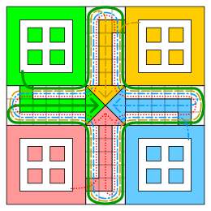
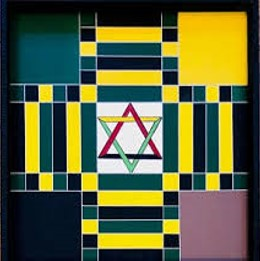
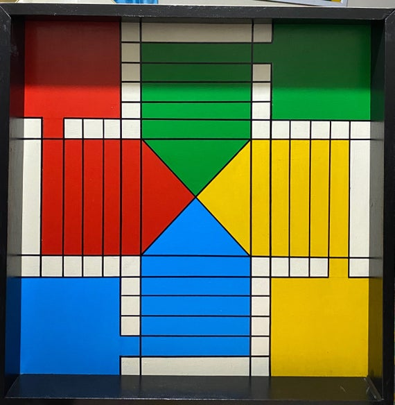
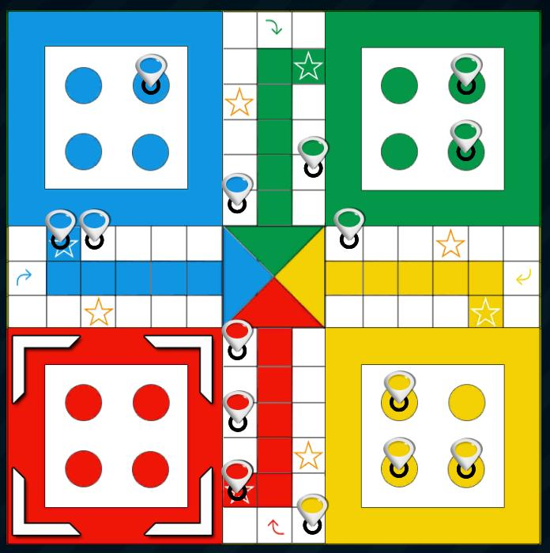

Ludo, or Ludi, as Caribbean people may refer to it, is a great board game to pass time. Historians remark the origins of the game trace back to India in the 6th century. Emperors and commonfolk, alike, engaged in playing it then, and it appears to have stood the test of time. But what's more, various adaptations to the rules and layout have made the game popular in places all over the world. It is a well-known and simple to understand game, which may perhaps be the reason for its popularity. Below you can see some of the adaptations made by individuals with a love for the game.
   